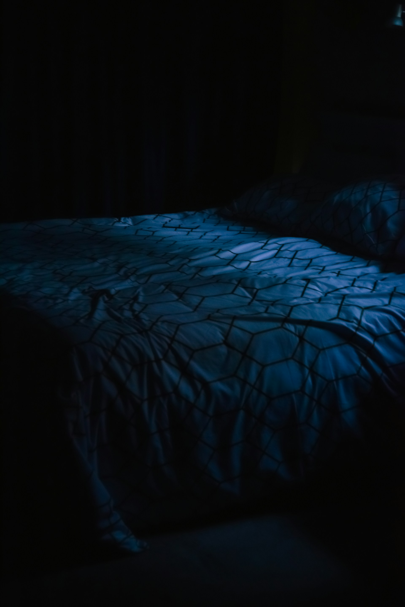

Skapa ett svalt och mörkt sovrum

Ditt sovrum bör fungera som en fristad för återhämtning, där yttre störningsmoment minimeras för att ge hjärnan rätt signaler. Det handlar om att skapa en grotta liknande miljö som är sval, tyst och helt mörk, eftersom minsta ljusstrimla kan störa produktionen av melatonin. En svalare temperatur i rummet hjälper kroppens kärntemperatur att sjunka, vilket är en naturlig del av insomningsprocessen. Genom att rensa bort teknik och arbetsrelaterade föremål från sovrummet lär du din hjärna att förknippa rummet enbart med vila och närhet, vilket sänker stressnivåerna så fort du går över tröskeln.